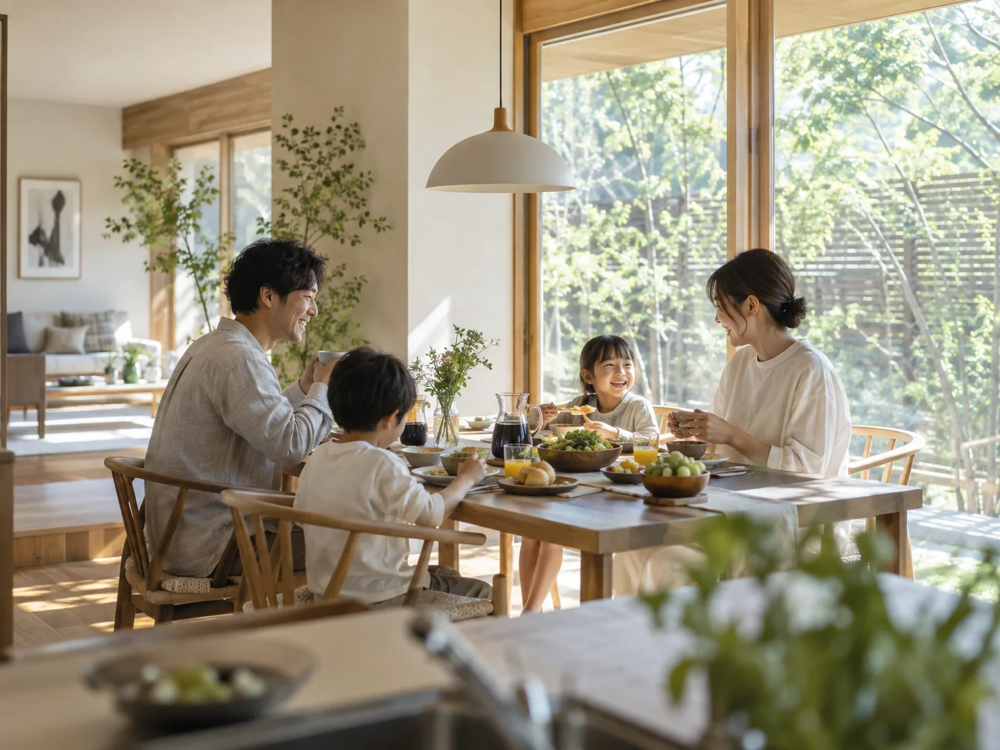
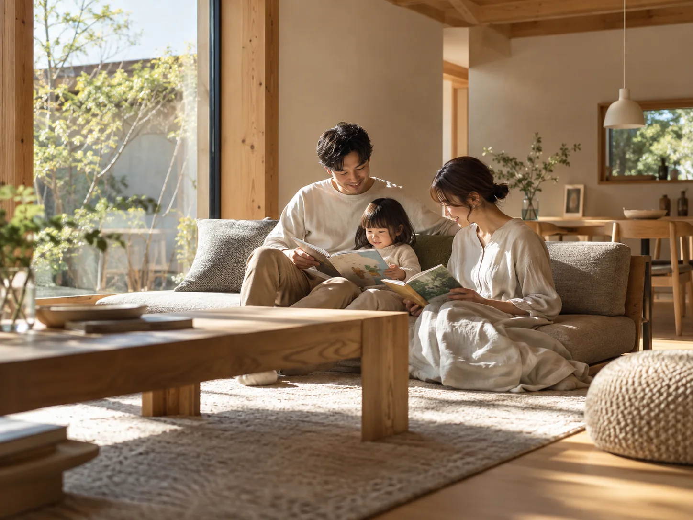

01
宇都宮市 / ご夫婦＋お子さま
Sさまご家族
「木の香りに包まれて、
毎日が気持ちいいです。」
朝の光がやわらかく入り、家族で過ごす時間が自然と増えました。リビングで本を読んだり、食卓を囲んだりする時間がとても心地よいです。


VOICE
VOICES FROM HOME
家づくりの満足は、完成した瞬間だけでは決まりません。
朝の光、家族との時間、庭とのつながり、日々の過ごしやすさ。
KURAHAUSで暮らすご家族の声をご紹介します。